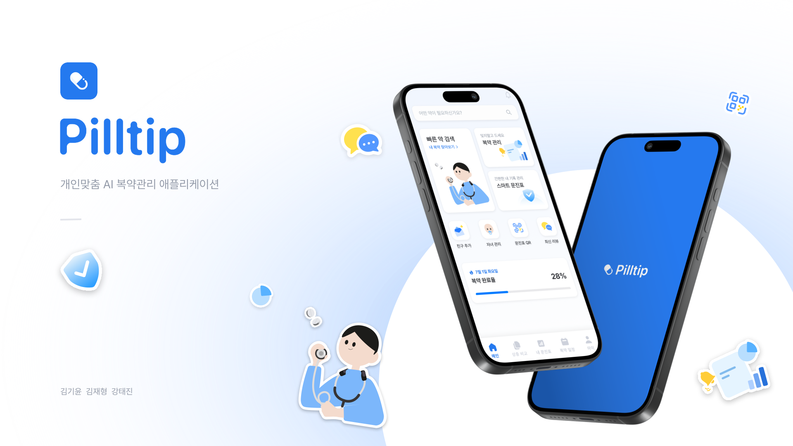
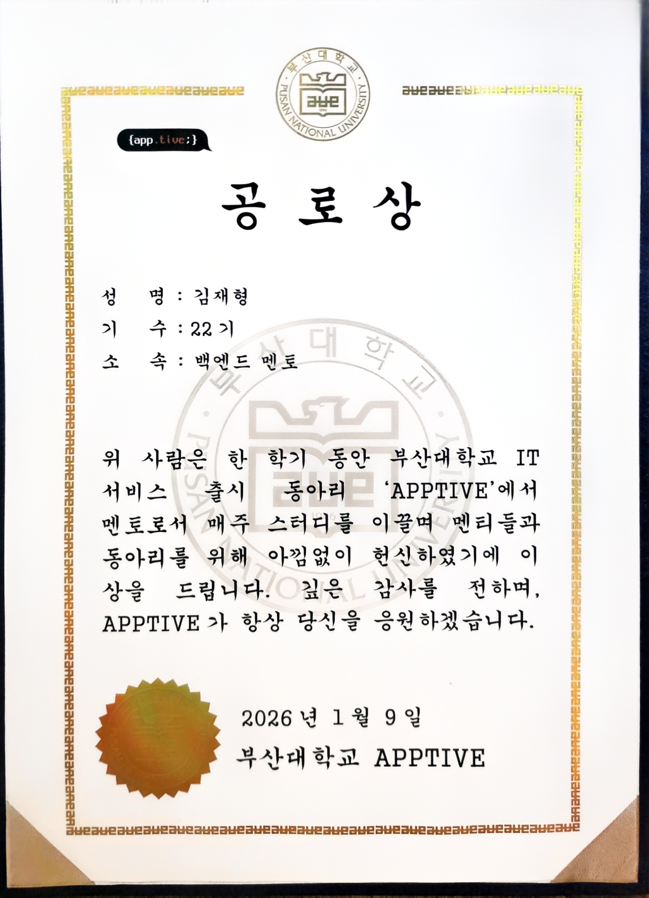
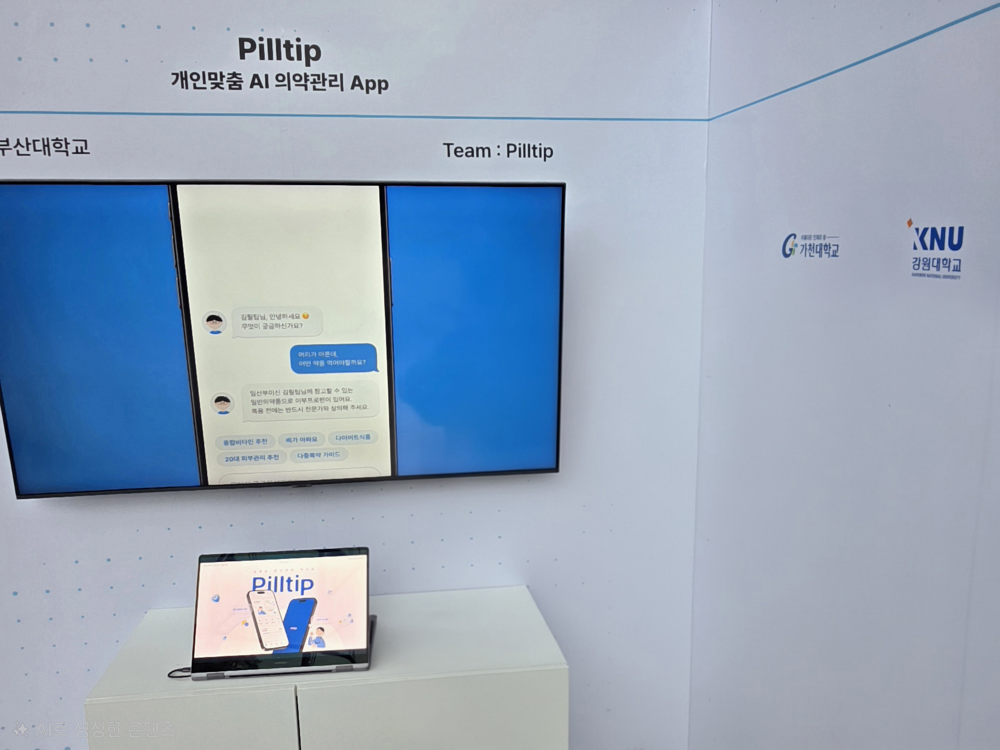
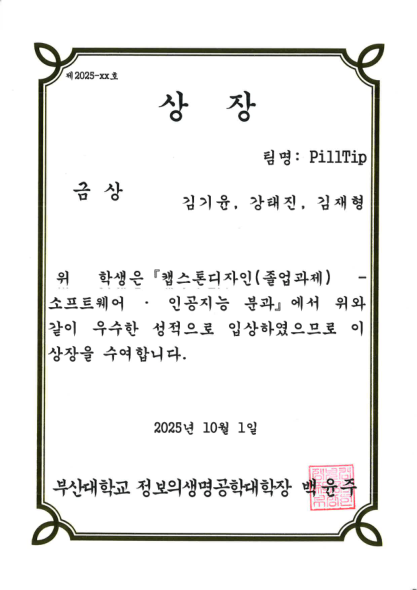
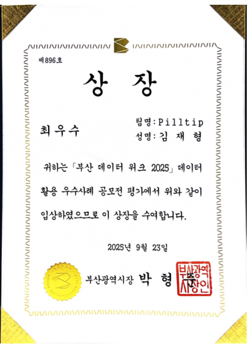
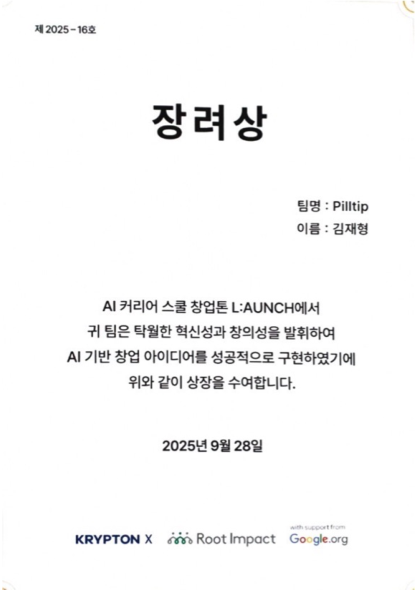
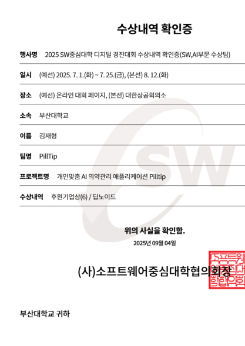

Fruition
An AI workspace that organizes uploaded documents into an LLM-generated Wiki, answers questions using source evidence through RAG, and edits documents in natural language.
GitHub · local-pilot ↗GitHub · AI repository ↗ABOUT ME
I enjoy taking a deep dive into problems.
I weigh accuracy, cost and processing time to choose an implementation that fits the service.
I contributed to Fruition, an AI workspace that turns documents into knowledge, and Pilltip, a medication service that explains drug information in plain language.
SKILLS
Java · Spring Boot · Spring AI · Python
Authentication and authorization (Spring Security, OAuth 2.0)
Personal shopping project · Login ↗
Todo web app · OAuth ↗
LangChain · LangGraph · RAG · LLM Evaluation · Jev
Elasticsearch · Weaviate · BGE-M3 · BM25
MySQL · PostgreSQL · Redis · Kafka
Docker · Docker Compose · GitHub Actions
PROJECTS
An AI workspace that organizes uploaded documents into an LLM-generated Wiki, answers questions using source evidence through RAG, and edits documents in natural language.
GitHub · local-pilot ↗GitHub · AI repository ↗
A personalized AI medication service that explains drug information in plain language and helps users manage their own and their family’s medications and schedules.
GitHub repository ↗Investigated bugs, submitted fixes and addressed CI in a Rust HWP/HWPX project. Fixed textFlow attributes of images, tables and shapes being reset after saving.
GitHub repository ↗ PR #1213 · Merged ↗ PR #1351 · Submitted ↗
Enlarge ↗Backend mentee and mentor. Led 6 mentoring and code-review sessions for 12 mentees. Helped revise the curriculum to strengthen HTTP, Servlet, REST API and database foundations.
APPTIVE Backend Mentor Merit Award · 2026.01.09

Enlarge ↗Represented Pusan National University at the Pilltip booth, demonstrating the service and answering technical questions.

Enlarge ↗
Capstone Design Gold Award
Software & AI division / College of Information and Biomedical Engineering, Pusan National University

Enlarge ↗
Busan DATA WEEK Top Excellence Award
Data utilization case competition / Busan Techno Park

Enlarge ↗
AI LAUNCH Career School Startup Hackathon Encouragement Award
KRYPTON X x Root Impact x Google.org

Enlarge ↗
SW University Digital Competition Sponsor Award
SW University Council
Shifted from splitting by feature to defining data ownership. Documented both the benefits of asynchronous processing and the added operational burden.
PLANNING / Defining user problems ↗Revisited feature-first planning and brought together the team’s difficulties finding documents to define the problem we would solve together.